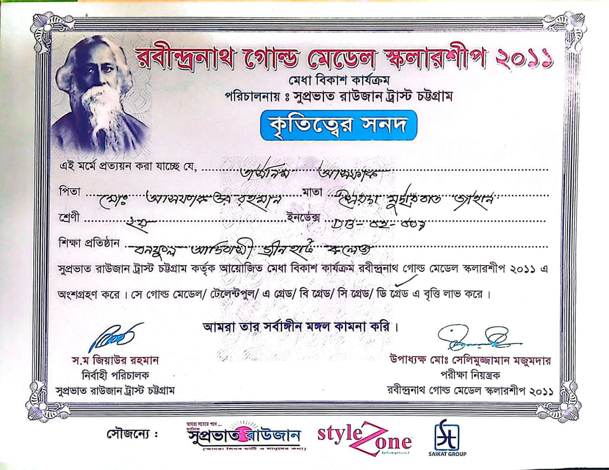
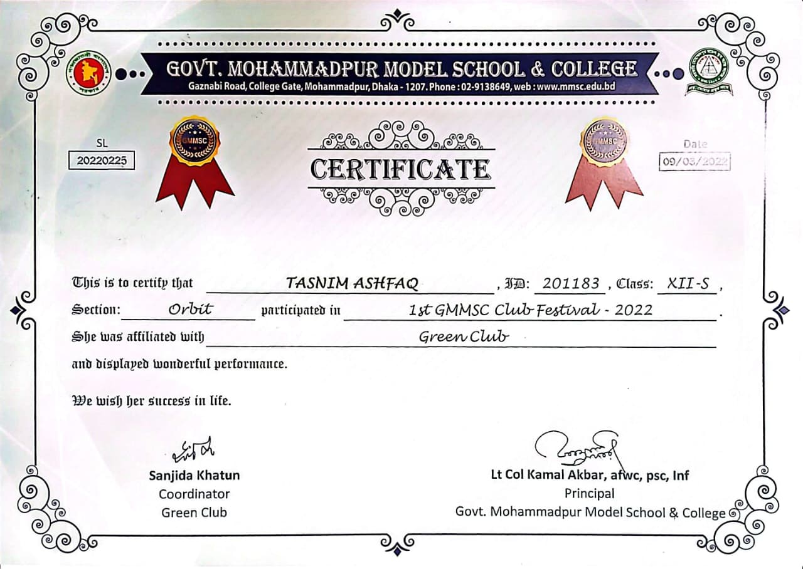
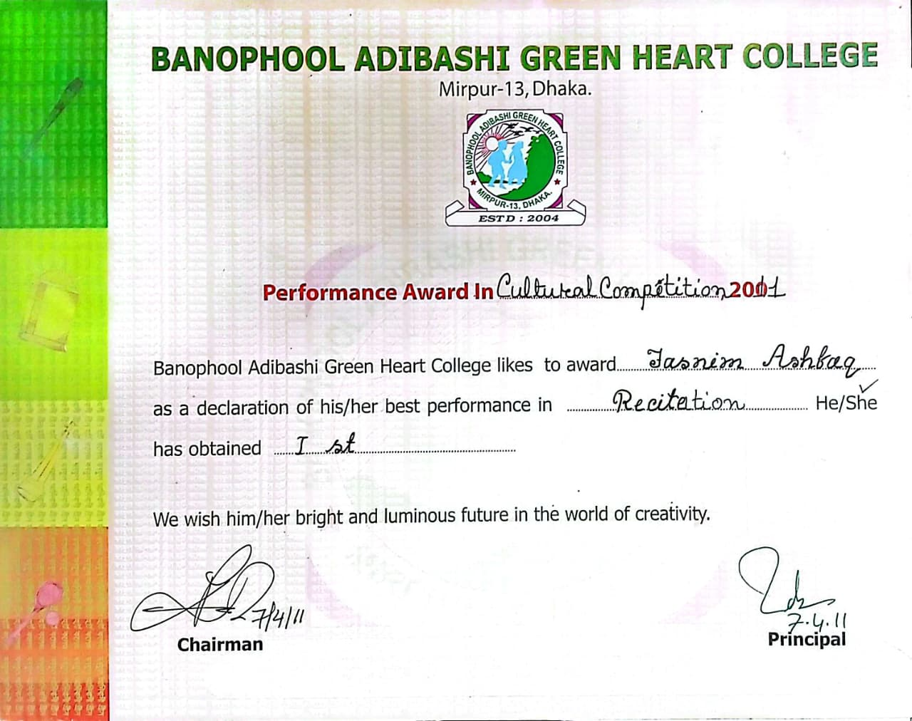

Computer Science & Engineering student at UAP. Passionate about web development, creativity and continuous learning.
Contact MeI am pursuing a degree in Computer Science & Engineering, building a strong foundation in both frontend and backend technologies. I enjoy developing full-stack web applications that combine intuitive user interfaces with efficient server-side functionality. My interests include modern web frameworks, databases, and cloud technologies. I am eager to work on real-world projects, contribute to innovative solutions, and grow as a skilled full-stack developer ready to make an impact in the tech industry.
University of Asia Pacific (UAP)
Third Year | 1st Semester
Current CGPA: 3.95
Database Management System Project
TrackTime is a database-driven system designed to manage metro train operations, including schedules, delays, and real-time passenger notifications to ensure commuters stay informed.
Technologies: SQL, Database Design, ER Modeling
Console-Based Java Application
PawMatch is a console-based Java application that connects pet givers with available foster homes. The system allows user registration, pet listing management, foster applications, and foster history tracking with persistent file storage.
Technologies: Java, OOP, File Handling, Exception Handling



Serving as the Class Representative, acting as a liaison between faculty and students, coordinating academic communications, and representing class interests in official matters.
Progressed through multiple leadership roles from 2nd to 4th semester: Club Representative → Junior Executive → Senior Executive. Contributed to event organization, team coordination, and technical activities.
Created and managed technical and promotional content, contributing to club engagement, branding, and digital communication initiatives.